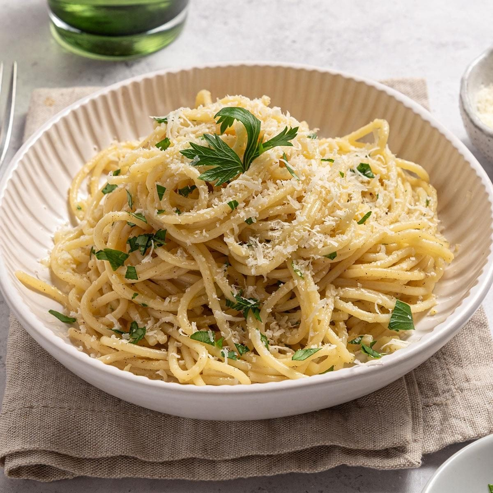

Home
Garlic Butter Pasta

Description
Garlic butter pasta is a quick and comforting dish made with pasta tossed in melted butter, garlic, and simple seasonings. It is an easy meal that can be prepared with just a few ingredients.
Ingredients
- Pasta
- Butter
- Garlic
- Parmesan Cheese
- Salt
- Black pepper
- Parsley
- Olive Oil
Steps
- Bring a pot of salted water to a boil
- Cook the pasta according to the package instructions
- While the pasta cooks, melt butter in a pan over medium heat
- Add minced garlic and cook until fragrant
- Drain the pasta, reserving a little pasta water
- Add the pasta to the pan and toss it with the gralic butter
- Add Parmesan cheese, black pepper, and a little pasta water if needed
- Garnish with parsley and serve immediately